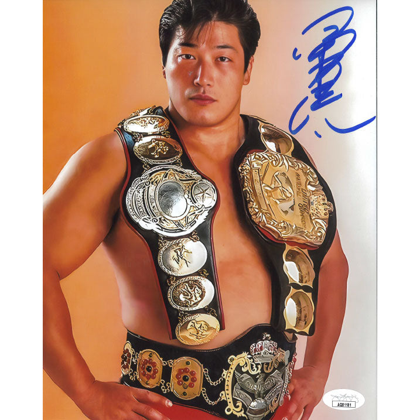

Kenta Kobashi Feature
A look at one of the most influential wrestlers of the All Japan and NOAH generations.

Kenta Kobashi is one of the most celebrated professional wrestlers of his generation. From his rise through All Japan Pro Wrestling to his legendary championship years in Pro Wrestling NOAH, Kobashi became known for extraordinary endurance, devastating strikes, dramatic championship battles, and an ability to turn long matches into unforgettable stories.
Kenta Kobashi
小橋 建太
1988, All Japan Pro Wrestling
All Japan Pro Wrestling and Pro Wrestling NOAH
Burning Lariat
Burning Hammer
2003, with a two-year championship reign
May 11, 2013, at Nippon Budokan
Kobashi entered All Japan Pro Wrestling during one of the most influential periods in Japanese professional wrestling. He began as a young wrestler who had to establish himself in a promotion filled with imposing heavyweight stars.
His early career was defined by constant improvement. Kobashi gradually transformed himself from an inexperienced young wrestler into one of the promotion's most dependable performers.
His development alongside wrestlers such as Mitsuharu Misawa, Toshiaki Kawada, and Akira Taue helped create the environment that would eventually produce some of All Japan's most famous championship matches.
Kobashi became closely associated with Mitsuharu Misawa and the Super Generation Army. Their battles against the Holy Demon Army helped establish All Japan as one of the world's premier wrestling promotions during the 1990s.
Kobashi's reputation grew because of the punishment he could absorb. Matches involving him frequently became contests of endurance, with increasingly dramatic exchanges as the bout progressed.
The All Japan heavyweight scene of the 1990s became famous for lengthy, physical matches built around escalation, resilience, and championship-level storytelling. Kobashi became one of the central figures of that era.
The rivalry network involving Kobashi, Misawa, Kawada, and Taue became one of the defining periods of Japanese heavyweight wrestling.
Their matches frequently pushed professional wrestling toward extraordinary levels of athleticism and physical storytelling. Kobashi's role in that era helped establish him as a wrestler capable of carrying major singles and tag team programs.
His championship victories and repeated performances against the biggest stars of All Japan gradually changed his status from promising young wrestler to established main-event competitor.
Kobashi's rise eventually led to the All Japan Triple Crown Heavyweight Championship. The title represented the highest level of singles competition in the promotion.
Winning the championship established Kobashi as one of the promotion's leading heavyweight stars and placed him permanently among the defining wrestlers of the era.
Kobashi held the Triple Crown Heavyweight Championship on multiple occasions and repeatedly returned to the title picture throughout his All Japan career.
Kobashi's Triple Crown matches became known for their intensity and physicality. The championship became a symbol of his evolution into one of All Japan's most important stars.
His matches against the other major heavyweight wrestlers of the period became important parts of the company's history and helped define the reputation that Kobashi carried into the next phase of his career.
Kobashi eventually became associated with the Burning faction, a group whose name would become inseparable from his identity during the later portion of his career.
The name fit the character that Kobashi had developed in the ring. His style was based on persistence, physical punishment, explosive offense, and an almost relentless refusal to stay down.
The Burning Lariat became Kobashi's signature weapon. Rather than relying on complicated technique, the move was built around timing, impact, and the sheer force behind Kobashi's swing.
Few moves became as closely identified with a wrestler as Kobashi's lariat became with him. It became the punctuation mark at the end of many of his most important matches.
Kobashi's Burning Hammer developed a legendary reputation because of its devastating appearance and the rarity with which he used it.
The move became one of professional wrestling's most recognizable finishing maneuvers and is closely associated with Kobashi's name.
The wrestling landscape changed dramatically around the turn of the millennium. Misawa and a large group of wrestlers departed All Japan and formed Pro Wrestling NOAH.
Kobashi followed the movement and became one of the most important figures in the new promotion.
Pro Wrestling NOAH gave Kobashi another platform on which to establish his legacy. He became one of the promotion's defining stars and eventually reached the top of the company.
His rivalry with Mitsuharu Misawa continued, while new opponents and younger wrestlers gradually entered the picture.
Kobashi's championship reign as GHC Heavyweight Champion became one of the defining accomplishments of his NOAH career. He held the championship for roughly two years and made thirteen successful defenses.
Kobashi defeated Mitsuharu Misawa to win the GHC Heavyweight Championship in 2003.
His reign became famous for its longevity and for the number of major challengers he defeated. The championship run established Kobashi as the centerpiece of NOAH's heavyweight division.
NOAH's historical championship records list Kobashi's reign as beginning in 2003 and ending after approximately two years, with thirteen defenses. [oai_citation:1‡PRO-WRESTLING NOAH OFFICIAL SITE](https://www.noah.co.jp/profile/?utm_source=chatgpt.com)
Kobashi's reputation eventually reached well beyond Japan. His matches became heavily discussed among international wrestling fans, particularly among viewers interested in the history of All Japan and NOAH.
His reputation was built not simply on championships, but on the consistency and intensity of his performances across decades.
Kobashi's career was also marked by serious physical setbacks. Years of demanding matches took a significant toll on his body, leading to periods away from competition.
In 2006, Kobashi was diagnosed with kidney cancer and was forced to take a prolonged absence from wrestling.
His return became one of the most emotional moments of his career. After 546 days away from the ring, he returned at Nippon Budokan in 2007.
Kobashi's return demonstrated the resilience that had become one of the defining themes of his career. His comeback was met with an enormous emotional response from Japanese wrestling fans.
Kobashi continued competing after returning from cancer treatment, although injuries increasingly limited his ability to wrestle on a regular basis.
Even as his in-ring career became more difficult, his importance to NOAH and to Japanese professional wrestling remained enormous.
Eventually, Kobashi and NOAH reached the point where his remaining career would be focused on bringing his historic run to a proper conclusion.
On May 11, 2013, Kenta Kobashi wrestled his retirement match at Nippon Budokan.
The event brought together many of the wrestlers and personalities associated with his career and gave fans the opportunity to celebrate one of Japanese wrestling's most influential performers.
Kenta Kobashi officially retired from professional wrestling after a career that had lasted roughly twenty-five years.
Kenta Kobashi's legacy is built on much more than championship statistics.
His career represents one of the defining stories of Japanese heavyweight wrestling. His matches with Mitsuharu Misawa, Toshiaki Kawada, Akira Taue, Jun Akiyama, and numerous other opponents helped define an era.
His career also became inseparable from perseverance. He fought through injuries, returned from cancer, continued performing at the highest level possible, and eventually received the farewell that his career deserved.
Today, Kobashi remains an important figure in Japanese wrestling history and continues to be associated with wrestling events, appearances, training, and public activities.
| Promotion / Award | Accomplishment |
|---|---|
| All Japan Pro Wrestling | Triple Crown Heavyweight Championship |
| All Japan Pro Wrestling | World Tag Team Championship |
| All Japan Pro Wrestling | Asia Tag Team Championship |
| All Japan Pro Wrestling | Champion Carnival winner, 2000 |
| All Japan Pro Wrestling | Multiple World Tag League victories |
| Pro Wrestling NOAH | GHC Heavyweight Championship |
| Pro Wrestling NOAH | GHC Tag Team Championship |
| Pro Wrestling NOAH | Global Hardcore Crown Championship |

Explore a collection of Kenta Kobashi matches and historical footage covering different stages of his legendary career.
Watch the Full PlaylistA look at one of the most influential wrestlers of the All Japan and NOAH generations.
A feature exploring Kobashi's career and place in Japanese professional wrestling history.
Highlights from the career of one of Japanese wrestling's most recognizable heavyweight performers.
A deeper look at the promotions and rivalries that shaped Kobashi's career.
A retrospective on Kobashi's signature style, major matches, and lasting influence.
Kenta Kobashi's career represents one of the most important chapters in the history of Japanese professional wrestling. His work in All Japan Pro Wrestling and Pro Wrestling NOAH, his championship victories, his battles with injury and cancer, and his emotional retirement all form part of a career that continues to be studied and remembered by wrestling fans around the world.